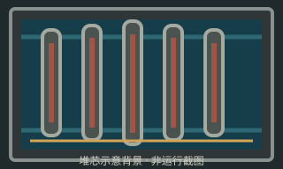
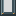
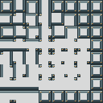

已安装试用 本页仅作SVG/PNG离线透明合成对照，游戏内排序与实际观感仍待用户复看。
alpha 64/255 仅原先透明的pane区域新增铅灰色，原窗框/角仍保持原像素与不透明度。
以下为SVG与PNG的浏览器离线合成：以手绘矢量堆芯示意为背景叠一层或两层玻璃，帮助比较铅灰可见度与内部辨识度。它不模拟Minecraft的透明面排序、光照或最终游戏观感。



128×128，64张16×16窗格。保留R1锁定的47项原生OMNIDIRECTIONAL上下文和17项fallback；正式试用资源已安装；本页仍展示生成候选图集。其他13张图集未改。PNG逐rect读取SVG的fill-opacity。
对照底图为本批手绘的简明SVG示意（preview/core-backdrop.svg），表示燃料管与冷却通道，不是游戏截图或新游戏纹理。窗格本身来自候选SVG导出的真实alpha PNG。